Home
| Search
| CTG
| RTL
| IDDE
| STL
Home
| Search
| CTG
| RTL
| IDDE
| STL
Last update Fri Apr 28 16:30:17 2006
|
Reference 1. Introducing Digital Mars C++ 2. Introducing the IDDE Part 2: Creating an Application with Digital Mars C++ 3. Starting a Project and Defining Workspaces 4. Generating an Application Framework 5. Defining Classes and Their Hierarchies 6. Editing Program Code 7. Adding Look and Feel with Resources 8. Testing an Application Part 3: Learning Digital Mars C++ by Example 9. Introduction to the Tutorial 10. Lesson 1: Create the DOS Application 11. Lesson 2: Generate an Application Framework 12. Lesson 3: Customize the Interface 13. Lesson 4: Add Messages with ClassExpress 14. Lesson 5: Add a Dialog Box with ClassExpress Part 4: More about Creating Programs 15. More about Projects and Workspaces 16. More about Project Build Settings 17. More about AppExpress 18. More about ClassExpress 19. Class Editor Reference 20. Hierarchy Editor Reference 21. Text Editor Reference 22. Using Version Control Part 5: More about Testing Programs 23. Controlling and Configuring the Debugger 24. Commands Available in Debugging Mode Part 6: About Managing Resources 25. ResourceStudio Resource Editor 26. Dialog Editor 27. Menu, Accelerator and String Table Editors 28. Bitmap, Cursor, Icon, and Font Editors 29. Version Information and Custom Resource Editors Part 7: Appendixes A. Expression Evaluation B. IDDE Settings and Command-Line Options C. Using NetBuild |
15. More about Projects and WorkspacesThis chapter continues the discussion of projects and workspaces that began in Chapter 3, "Starting a Project and Defining Workspaces." Here you find a detailed description of all commands and options associated with workspaces and projects. The first part of the chapter discusses the Environment menu and workspace options; the remainder of the chapter covers project files, the Project menu, project options, and the Project window.Environment Menu CommandsThe IDDE's Environment menu (Figure 15-1) contains commands with which you can modify the IDDE work environment.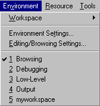 [Figure 15-1 Environment menu commands A list of available workspaces is added to the end of the Environment menu. The current workspace is checked. Choosing a name in this list is equivalent to clicking on the workspace tab in the Workspace toolbox.
WorkspaceThis page (Figure 15-4) provides options for controlling workspaces.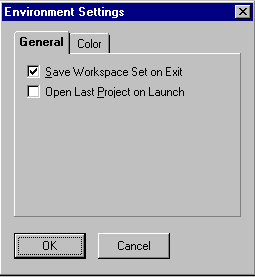 [Figure 15-4 Workspace page of the Environment Settings dialog box
Save workspace set on exitSaves the workspace set when the IDDE is closed.Open last project on launchWhen the IDDE is launched, automatically opens the project that was open when the IDDE was last closed.ColorThis page (Figure 15-5) provides options with which to customize the IDDE windows' colors.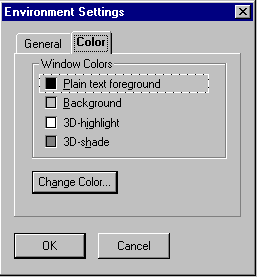 [Figure 15-5 Color page of the Environment Settings dialog box To change an item's color, first click on the item name. A dashed box appears around the item name. Then click on Change Color. You may then choose a new color from a Windows Color dialog box.
More about ProjectsThis section continues the discussion of projects that began in Chapter 3, "Starting a Project and Defining Workspaces."What a project containsThe project file contains a list of all the files in your project. It also contains information on how these files depend on one another. When the project manager creates a makefile (a file that builds your program), it uses a file's extension to decide what kind of file it is. The files you can put in a project are described here, along with how the IDDE uses them to build a program.C and C++ filesThe IDDE compiles C and C++ source files to produce object files and links the object files to produce the target.C source files have the .c extension; C++ source files have either the .cpp or the. cxx extension. When compiled, they all generate object (.obj) files. Header filesYou do not need to add header files to a project; they are added automatically by the project system. See the section "Dependency tracking" later in this chapter.If you do add a header file explicitly, it is flagged automatically for precompilation. See the description of the Header Files page of the Project Settings dialog box in Chapter 16, "More about Project Build Settings." The header files that are included by C/C++ source files to provide common interface definitions are identified by the file extensions .hpp, .hxx, and .h. In some situations, a C/C++ source file may be included by another source file. In this case, you probably do not want a separate object file created from that included source file. Do not add the file to the project. When you compile the target, the project system adds the included file but tracks it as an included object that should not be compiled or linked independently. Assembly filesYour project may contain assembly source and header files. Assembly language source files are identified by the file extension .asm. Assembly language header files are identified by the file extension .inc.Note: For assembly files to be built as part of a project, MASM must be in a directory specified by the PATH environment variable. For a NetBuild project, MASM must be in a directory specified by the PATH environment variable of every buildserver, and the buildclient. Object filesYour project can include pre-existing object files— files for which you do not have the source or that were compiled outside the IDDE. Such object files are identified by the file extension .obj. These objects are linked into your executable.Resource and dialog script filesYour project can include resource script files, dialog script files, and other binary resource files. The IDDE compiles these script files to produce a resource file. After the IDDE links the object files, it binds the resources from the resource files into the executable. The resource file types are:
LibrariesYour project can include libraries. The IDDE links the libraries with the project's object files to produce the executable file. If your program uses a dynamic link library (DLL), don't add the DLL to the project file. Instead, add the DLL's import library (.lib).Libraries or library interfaces to a DLL that you want to link into your executable are identified by the file extensions .lib. Linker definition filesYour project can include a linker definition (sometimes called module definition) file. Use a linker definition file to indicate to the linker how to build a library or executable. These files are identified by the file extension .def.If you have your own .def file, you can include it in the project. The IDDE automatically modifies the .def file to change a linker option if necessary. If you do not specify a .def file, one is generated and maintained automatically for you. Project filesThe IDDE automatically generates and maintains project files. Project files can be nested to form a hierarchical project structure. Project files are identified by the file extension .prj.Option setYou can include your own option set. Option sets that you create are identified by the file extension .opn.Batch and makefilesYou can include a batch or makefile. Batch files are identified by a .bat file extension, and makefiles by a .mak file extension.When you add a batch file or a makefile to a project, the Build Order dialog box (accessible via the Build Order button on the Make page under the Build tab of the Project Settings dialog box) becomes available to specify when to execute your batch files and makefiles. Project-generated filesThe project system generates and maintains files with these extensions:
Hierarchical project structureYou can include projects within projects (to any depth) to create a hierarchical project structure. Hierarchical projects have many uses.You can use hierarchical projects if you need to build more than one target as part of a system. For example, if your system includes an executable and a DLL, you can create a separate project for the DLL and include this new subproject in the master project. The library is built automatically when (and if) necessary. (Note that, since Windows relies on the module name to determine the uniqueness of modules, you need to give your targets different names. For example, do not name the executable generated by a project mymod.exe and name a DLL created by a subproject mymod.dll; an error results.) In other cases, some files may need different compiler settings. You have two options. You can put those files in a separate subproject, setting compile options for the project as necessary. Or, you can override compile options on a file-by-file basis. To do this, right-click on the file in the Project window, and choose Settings from the pop-up menu. You can then set compile options for that file. If you have a special preprocessing or translation step in your build process, you can create a subproject (a project within another project) for that make step. To accomplish the preprocessing, use the Make page under the Build tab in the Project Settings dialog box (see Chapter 16, "More about Project Build Settings") to call your own makefile or batch file. Use hierarchical projects to handle different releases or versions of a project. To build all the variants in one simple step, create a master project that contains only projects. When you build the master, each of the variants is built. These examples show that the hierarchical project system can be used in a variety of ways to customize the build process. Note that dependency tracking still works for subprojects— they are built as needed, before the master project is built. Note: When you build a project that has a hierarchical structure, all subprojects are rebuilt with either the Debug or Release setting, whichever is applied to the master project. To ensure that each subproject is linked with the correct libraries (Debug or Release), you need to rebuild each subproject's .lnk file. Dependency trackingThe project system automatically tracks dependencies among the components of a project. Dependency information is updated with each successive compilation. As you add or remove include files, for example, the corresponding dependencies are updated. You have the option of turning this tracking off.The IDDE also tracks changes made to build options and determines how much of the project needs to be rebuilt based on those changes. For example, if you change a compiler setting, all the sources are rebuilt. If you change a resource compiler option, only the resource compiler and link steps are executed. If you change a link option or library directory, only the linker is run. By tracking these changes, the project system supports efficient and accurate builds. In the Windows 3.1 version of the IDDE, the project system can track files in the project with respect to version control. For more information on project and source code control, see Chapter 22, "Using Version Control." Project menu commandsThe IDDE's Project menu (see Figure 15-6) contains commands to create, open, edit, and close projects; to build projects, to run the application; and to set project options. At the end of the menu, the IDDE adds the names of the most recently opened projects so that you can switch between projects as you work.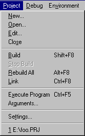 [Figure 15-6 Project menu commands]
Target settingsThe options on the Target page (Figure 15-8) specify the target and platform for your project.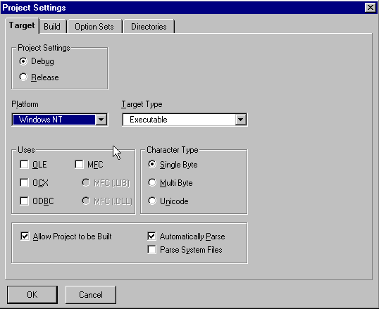 [Figure 15-8 Target page of the Project Settings dialog box
Operating systemThis set of options determines the target system for your project. Depending on the selection of the target system, different Target Type options become available. The target system can be one of the following:
Target typeThis set of options determines what your project will actually be: an executable, a library, a Windows DLL, or a simple console. The target type can be one of the following:
UsesThese options let you select the extension libraries that are linked to the executable.
Project settingsTwo options determine whether debugging information is included in the executable.
Allow project to be builtIf this option is selected, the application can be built. Deselect this option if a project should not be built (for example, if you don't want a subproject rebuilt when you choose Rebuild All in the parent project).Parse for browsingIf this option is selected, the project is automatically parsed. Deselect if you don't want the Browser to parse the source code. See Chapter 5, "Defining Classes and Their Hierarchies," for more information.Build settingsThe options on the Build page control how your project is compiled and linked. See Chapter 15, "More about Projects and Workspaces."Option setsThe Option Sets page (Figure 15-9) lets you save and retrieve project options. This feature makes it easy to define options once for a particular kind of target and apply them later to another project.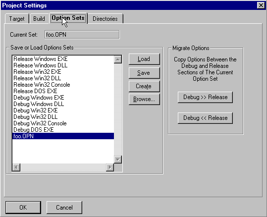 [Figure 15-9 Option Sets page of the Project Settings dialog box When you exit the IDDE or close a project, current options are saved in the project option file (. opn). This file has the same name as the project. For example, if the project name is test. prj, the option set associated with that project is named test. opn. The list of option sets includes sets you define and several predefined option sets. Click on an option set name to select the option set; double-click on an option set name or click on Load to load the option set. The predefined option sets are useful starting points for defining your own custom options. When you load one of these option sets, save any changes to another option set so the defaults are intact for later use. These option sets are named according to the target type and whether debugging information is placed in the executable. The four buttons on the dialog box have the following functions:
VCS optionsThe options on the VCS page control the version control system. These options are only available in the 16-bit IDDE. For information about version control see Chapter 22, "Using Version Control."DirectoriesThe options on the Directories page (Figure 15-10) specify various directories used by the compiler, linker, and browser.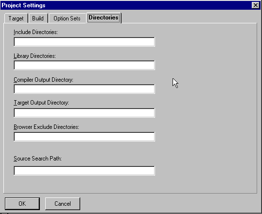 [Figure 15-10 Directories page of the Project Settings dialog box
Include directoriesSpecifies directories to be searched for included files. You may specify multiple directories by separating each pathname with a semicolon. These directories are searched after those specified by the INCLUDE environment variable.Library directoriesSpecifies which directories to search for libraries. You may specify multiple directories by separating each pathname with a semicolon. These directories are searched after those specified by the LIB environment variable.Compiler output directorySpecifies the directory in which object files (.obj) are placed.Target output directorySpecifies the directory in which the linked target is placed.Browser exclude directoriesSpecifies the directories that are excluded from parsing by the browser. Use this option, for example, to exclude the MFC header file directory, and thus prevent the display of MFC classes in the Class and Hierarchy editors.Source search pathSpecifies which directories to search for source files while debugging.The Project WindowThis section describes all the menu commands available from the Project window.Parse menu commandsThe Parse menu (Figure 15-11) contains commands to control the parsing of source files. Parse information (information about the project's C++ classes and class members) is stored in a global pool that is accessible to and used by the Class and Hierarchy Editors.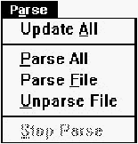 [Figure 15-11 Parse menu commands
View menu commandsIn debugging mode, commands in the View menu update other IDDE windows to show information pertaining to the selected file. For more information on this menu refer to Chapter 24, "Commands Available in Debugging Mode."Trace menu commandsThe Trace menu controls whether the debugger can step into, set breakpoints in, or watch data in a particular source file in debugging mode. See Chapter 24, "Commands Available in Debugging Mode," for more information.VCSThe VCS menu controls the Version Control System operation. Version control options are only available in the 16-bit IDDE. The VCS menu commands and their functions are described in Chapter 22, "Using Version Control."Project window left pane pop-up menu commandsThis menu (Figure 15-12) contains commands that operate on the current project.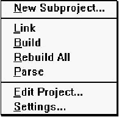 [Figure 15-12 Left pane pop-up menu commands
Project window right pane pop-up menu commandsThis menu (Figure 15-13) contains commands that operate on the selected file.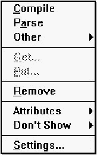 [Figure 15-13 Right pane pop-up menu commands
"..." pop-up menu commandsThis menu (Figure 15-14) is opened by clicking on the "..." box above the vertical scroll bar in the right pane of the Project window.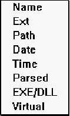 [Figure 15-14 "..." pop-up menu commands Use this menu to set up the display of project file information in the right pane. Information that can be displayed includes:
Columns of information are removed from the display by dragging the column heading out of the column heading area. (The item then becomes available on the "..." pop-up menu.) The order of the columns can be changed by dragging the column headings to a new position. Project window mouse functionsUse the mouse to open projects, select project files, open source windows, drag project files to other windows, open pop-up menus, and change the relative sizes of the right and left panes.To resize the panes, first position the cursor on the dividing line between panes. The cursor changes to a two-headed arrow. Then click the left mouse button and drag the separator to the desired location. The right mouse button opens the pop-up menus (see the sections "Project window left pane pop-up menu commands" and "Project window right pane pop-up menu commands" earlier in this chapter). Click on a project or subproject in the left pane to open that project. Double-click on the current project in the left pane to toggle (expand or collapse) the display of its subprojects. Click on a project file in the right pane to select it. Double-click on a file in the right pane, or drag it to an empty part of the workspace, to open the Source window to view and edit the file. (Double-clicking on a subproject in the right pane opens that subproject.) You can drag files from the right pane to Source windows, Function windows, Data/ Object windows, and Assembly windows.
Finally, to eliminate a column of information from the right pane,
click on the title at the top of the column and drag it outside the
column heading area. Columns of information are restored from the
"..." pop-up menu, to the right of the column titles. To rearrange
columns of information, drag the title at the top of the column to a
new position. You can make columns wider or narrower by
dragging the column title's right edge to the right or left. Clicking on
a column title re-sorts the list of project files according to that
column.
|